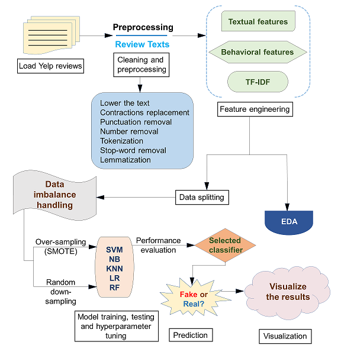
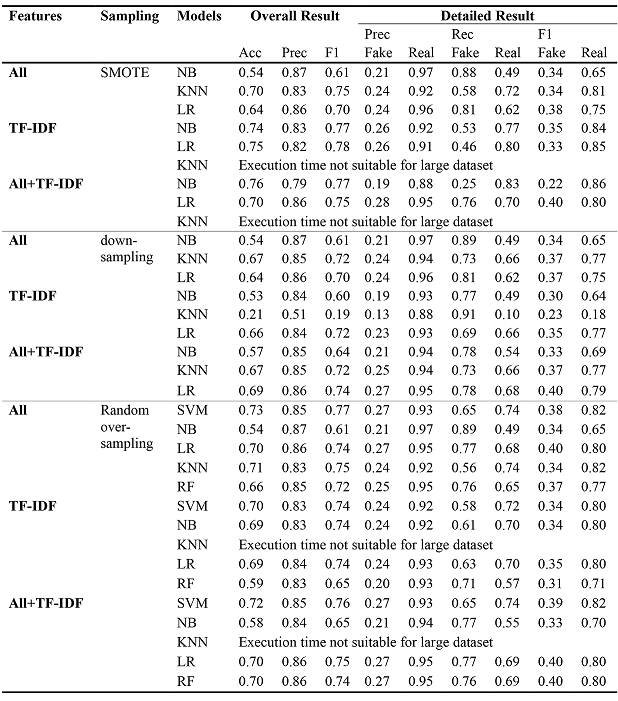

Detection and Visualization of Fraudulent Reviews on Yelp
I worked on the Yelp fake review project during the summer 2023 semester for Georgia Tech's CSE6242 (Data & Visual Analytics) class. The repository is available on github and the full report is published to the root of the repository.
For this group project we trained 5 classifiers on the YelpZip dataset, a binary classification problem that determined whether a review was real or fake. We compared the results between Support Vector Machine (SVM), Naive Bayes (NB), K-Nearest Neighbor (KNN), Logistic Regression (LR) and Random Forest (RF).
We found RF with TF-IDF and SMOTE oversampling to be our best performing model, with an F1-score of 0.8. We then ran our model to generate labels for the Kaggle V4 Yelp dataset and developed an interactive visualization application with D3.js as an analytical tool.
The raw dataset was pre-processed and engineered using:
- Synthetic minority over-sampling (SMOTE) for balancing the dataset
- TF-IDF for sentiment analysis
- Feature selection to remove highly correlated behavior and textual features

We compared the results of all combination of features, resampling techniques, and supervised learning algorithms. Final metrics are shown in the table. The main evaluation used to quantify the performance of classification models were accuracy, precision, recall, and F1-score. From our data, it was evident that RF outperformed SVM, NB, KNN and LR using the combination of all features after removing multicollinearities with TF-IDF and using SMOTE as a resampling technique. It showed an overall accuracy of 77%, 63% recall for the minority class, and 79% recall for the majority class in fake review detection.
Behavioral features outperformed textual features where the accuracy had increased by 18.87%. The addition of the TF-IDF features to the textual features improved accuracy from 53% to 70% using linear SVM and SMOTE, and the inclusion of behavioral features improved recall for the minority class from 45% to 64% in our baseline SVM model.
To prepare the data for the visualization, we performed exploratory data analysis (EDA) using pandas, matplotlib, and an in-memory SAS visualization tool. This informed our pre-visualization manipulation strategy and revealed several data cleanup and transformation tasks, such as misaligned zip codes and spelling errors in address fields.

The visualization, written in D3.js, is shown below. It includes a chloropleth map, bar chart, and three dropdowns for altering the the map and barchart. The first dropdown changes the city, the second changes the business sector, and the third changes the metric for coloring the chloropleth map and bar chart. The metrics include:
- Fake Reviews (%): Percentage of fake reviews out of the total number of reviews.
- Stars Absolute Difference (%): Absolute relative percent difference of star rating with fake reviews and without fake reviews.
- Stars Change with Fake Reviews: Change in star rating calculated as the rating excluding fake reviews subtracted from the rating including all reviews.
The chloropleth map is filtered by the city and business sector specified in the dropdowns. The light grey overlay in the middle of the map shows the boundaries for the chosen city. The map is divided by zipcode and colored by the metric chosen in the dropdown.
Hover over the map to show a tooltip including the hovered zipcode, number of fake reviews and all three metrics for the hovered zipcode. It will also show a bar chart with the top five businesses that have the largest number of fake reviews for the hovered zipcode. Bars are colored by the chosen metric for each business. Clicking anywhere on the map locks the bar chart in place and colors the clicked zip code green. Clicking anywhere else on the page afterwards unlocks the chart.